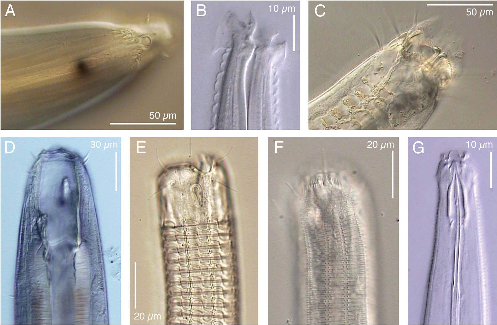

A quick tour of nematode diversity and the backbone of nematode phylogeny*
Contrary to textbook dogma, nematodes are not only highly diverse, but often also complex and biologically specialized metazoans. Just a few of the many fascinating adaptations are reviewed in this chapter, as a prelude to a quick tour through phylogenetic relationships within the phylum. Small Subunit rDNA sequences have confirmed several controversial prior hypotheses, as well as revealing some unexpected relationships, resulting in a recent proposal for revised classification. Three major lineages exist within the phylum: Chromadoria, Enoplia and Dorylaimia. The exact order of appearance of these lineages is not yet resolved, which also leaves room for uncertainty about the biology and morphology of the exclusive common ancestor of nematodes. Enoplia and Dorylaimia differ considerably in many respects from C. elegans, which is a member of Chromadoria. The latter group is extremely diverse in its own right, for example in ecological range, in properties of the cuticle and in structure of the pharynx. The formerly relatively widely accepted class Secernentea is deeply nested within Chromadoria, and has therefore recently been relegated to the rank and name of order Rhabditida. Within this order, closer relatives of C. elegans include strongylids, diplogasterids and bunonematids. Tylenchs, cephalobs and panagrolaimids are also members of Rhabditida, albeit probably more distantly related to C. elegans.
Nematodes are the haiku among multicellular animals, combining endless variation with a deceptively simple underlying anatomical pattern. In the search for maximally informative models, this reputation for underlying simplicity has sometimes caused C. elegans to be erroneously described as a typical representative of all nematodes, or as a typical example of a simple metazoan (e.g., Nelson et al., 1982). However, simplicity lies very much in the eye of the beholder: nematodes are highly diverse in almost every respect, including for example morphology (Figure 1). A small sampler of some of the many other kinds of remarkable nematode adaptations will further illustrate this point.
|  |
Figure 1. Examples of divergence in anterior morphology of some freeliving nematodes. A. Thoracostoma sp (Enoplina). B. Acromoldavicus mojavicus (Tylenchina: Cephalobomorpha). C. Enoploides sp. (Enoplina). D. Pontonema cf. parpapilliferum (Oncholaimina). E. Ceramonema sp. (Plectida). F. Latronema sp. (Chromadorida). G. Actinca irmae (Dorylaimida). Click on a picture to open a small video clip (200–600 Kb), or on a letter to open a large clip (2–5 Mb) of the depicted nematode. Use the left and right arrow keys on your keyboard to focus up and down. These clips were produced with Video Capture and Editing microscopy as described in De Ley & Bert (2002).
Two Cryonema species permanently live at freezing point inside lacunae in arctic ice; one of them preys on other lacunary nematodes (Tchesunov & Riemann, 1995). Nematodes of the subfamily Stilbonematinae are covered with a dense “fur” of species-specific ectosymbiotic sulfur-oxidizing bacteria, allowing them to thrive at the redox boundary layer in sulfur-rich marine sediments (Nussbaumer et al., 2004). Oncholaimus mates by traumatic insemination: males inject sperm through the female cuticle, females then develop specialized internal structures for sperm transfer to the reproductive system - or for evacuation of excess sperm into the intestine (Coomans et al., 1988). The entomopathogen Steinernema tami produces dimorphic sperm, with 50–100 μm wide megaspermatozoa functioning as self-propelled spermatophores carrying the 2 μm wide microspermatozoa on their surface (Yushin et al., 2003). Mehdinema alii uses male crickets as vectors for transmission between female cricket hosts, female nematodes give birth to fully formed dauers while males have a motile copulatory claw extruding through a separate postcloacal opening (Luong et al., 2000). The millipede gut inhabitant Zalophora is an intra-intestinal predator and cannibal of other gut nematodes (Hunt & Moore, 1999).
Some recent discoveries in nematodes extend the range of biological processes and properties known for all Metazoa. For example, mitochondrial mRNA transcription in Teratocephalus lirellus involves insertional editing of polyA motifs, a process otherwise only known in protists (Vanfleteren & Vierstraete, 1999). Mitochondrial DNA of the potato cyst nematode Globodera pallida is arranged in at least six different mini-circles, each of which carries only a subset of the mitochondrial genome, resembling conditions occurring in some plants and fungi but not other metzoans (Armstrong et al., 2000). Conversely, closer scrutiny of increasingly distant relatives of C. elegans has revealed a number of aspects in which some nematodes are much less different from other Metazoa than C. elegans is. A very recent case in point is the discovery that early development in Tobrilus diversipapillatus passes through a classical metazoan coeloblastula stage, unlike any other nematode species studied so far (Schierenberg, 2005). Clearly, our appreciation of nematode diversity will continue to change as we explore the biology of more species that have so far received little attention, and as we encounter more of the potentially vast number of unknown species.
In the face of overwhelming diversity, a phylogenetic framework is needed to underpin meaningful comparisons across taxa and to generate hypotheses on the evolutionary origins of interesting properties and processes. Our understanding of nematode relationships has a varied and at times turbulent history, reflecting not only wider developments in phylogenetics, but also the expertise and perspectives of those few systematists who produce comprehensive classifications. Until recently, the data for most nematode phylogenies consisted of relatively few morphological characters derived primarily from light microscopy and often by individual effort of the lone taxonomist. Molecular phylogenetics, bioinformatics and digital communication technologies have substantially altered the dynamics of nematode systematics, creating conditions where collaborative strategies are much more productive than individual effort. This approach was exemplified by the analyses of Blaxter et al. (1998) based on small subunit (SSU) rDNA sequences of 53 nematode species.
Just seven years later, SSU rDNA sequences are available in public databases for more than 600 nematode species. The basic topology obtained by Blaxter et al. (1998) appears to remain quite robust, although a number of important groups remain to be included. Also, it is increasingly clear that some important aspects of nematode phylogeny cannot be resolved by SSU data alone. Two of the major features of SSU analyses have independently confirmed suspicions held by several proponents of earlier morphological systems, i.e., that many important anatomical features have arisen repeatedly during evolution, and that one of the two traditional classes (Secernentea) is deeply phylogenetically embedded within the other (Adenophorea). In an effort to translate the implications of SSU rDNA sequences into classification, De Ley & Blaxter (2002, 2004) proposed a system based primarily on the molecular backbone of SSU phylogenies (Figure 2), but also incorporating other characters. The result combines elements from many previous systems, and introduces some new features with respect to ranking (e.g., use of infraorders; Figure 3). For the sake of convenience, we will follow the nomenclature of this system here, in order to outline the major features of SSU-based nematode phylogenies.
The molecular data published to date confirm the presence of three early nematode lineages, corresponding to the previously recognized subclasses Chromadoria, Dorylaimia and Enoplia (Lorenzen, 1981; Inglis, 1983). The exact order of appearance of these three lineages is not yet resolved (Figure 2). It seems likely that Enoplia appeared first, and it is even possible that Dorylaimia and/or Chromadoria could have originated within Enoplia. On the other hand, SSU data also allow for the possibility that Dorylaimia diverged first, which is an intriguing possibility because all known Dorylaimia are absent from marine habitats. A “Dorylaimia first” topology would therefore imply that the ancestor of all nematodes was perhaps a freshwater organism, and not a marine animal as more commonly assumed (De Ley & Blaxter, 2004).
Within Chromadoria, a number of clades have arisen in a series of successive bifurcations and radiations. These clades are classified as separate orders, including for example the predominantly marine Chromadorida and Desmodorida, as well as orders that have also diversified extensively in freshwater sediments (e.g., Monhysterida) and moist soils (e.g., Plectida). In addition, the chromadorian monophylum also includes the clade formerly ranked as class Secernentea, a hugely successful radiation of predominantly terrestrial nematodes. SSU phylogenies place this taxon at the crown of Chromadoria and as sister group to the order Plectida. For this reason, De Ley & Blaxter (2002, 2004) classified it instead as order Rhabditida, thereby greatly expanding the contents of this taxon compared to all previous systems.
{kind=link}
Figure 2. Summarized SSU phylogeny of Nematoda with example taxa, ecological range and higher classification (adapted from De Ley & Blaxter, 2002). P = phtypoarasitic, Z = zooparasitic.
{kind=link}
Figure 3. Summarized SSU phylogeny of Rhabditida with example taxa, ecological range and higher classification (adapted from De Ley & Blaxter, 2002). Note the use of infraorder names (ending in -omorpha).
The phylum Nematoda occurs in an incredibly wide spectrum of ecological habitats and natural histories, ranging from e.g., deep sea sediments to arid deserts, or from interstitial bacterivores to obligate parasites with multiple intermediate hosts. Several of its constituent clades cover a large subset of this ecological spectrum, but interestingly none of them appears by itself capable of covering the full ecological range of the phylum, especially so within the class Enoplea (Figure 2). This suggests that the evolution of ecological adaptations within each nematode taxon was constrained by limitations on the rates of change in genes and ecophysiology, or by competitive exclusion from habitats previously colonized by other taxa, or both.
The non-marine occurrence and the present diversity of Dorylaimia both suggest that these could have been the first nematodes to conquer freshwater and terrestrial habitats. Such an early origin could explain the great diversity within this subclass, which includes not only the mostly freeliving Doryaimida and Mononchida, but also remarkable animal parasites such as Mermithida and Trichinellida. Mermithids are highly unusual among metazoan parasites in that they actually leave the host before reaching adulthood - a property otherwise only found in the phylum Nematomorpha. The present existence of such exceptional biologies hints at much greater past diversity. The most successful surviving clade within Dorylaimia, however, is the order Dorylaimida. This includes many species of large predators/omnivores, as well as the plant-parasitic family Longidoridae, of which some species transmit plant viruses. The evolutionary radiation of dorylaims appears to have resulted in large part from functional diversification of the odontostyle, a protrusible, hollow and often needle-like tooth used for puncturing and emptying food items (e.g., Figure 1G). Although predation or plant feeding are well documented for larger dorylaims, the food sources of most smaller species (with much smaller odontostyles) remain unknown.
Enoplia are especially diverse in marine habitats, but multiple lineages are also found in freshwater sediments and/or moist soils (Figure 2). One of these lineages includes marine, freshwater and terrestrial taxa, suggesting that early Enoplia were characterized by much greater osmotic tolerance than early Dorylaimia. Most enoplian clades include large predators with big hooks or teeth in more or less complex arrangements (Figure 1C,D), as well as interesting sensory structures such as eyespots (Figure 1A,D) and a unique type of stretch receptors (= metanemes; Lorenzen, 1994). Enoplia are especially interesting phylogenetically because of the occurrence of features that are presumably ancestral within nematodes, such as a highly indeterminate mode of development (Justine, 2002) and retention of the nuclear envelope in mature spermatozoa (Lee, 2002). No Enoplia are known to have adapted to terrestrial environments subject to extreme temperatures, nor are there any surviving lineages that parasitize animals (with the possible exception of a few enigmatic taxa of uncertain position). The one enoplian order that has clearly undergone extensive evolution in soils is the order Triplonchida, which includes plant parasites such as Trichodorus. These are convergent with dorylaims in a number of respects, e.g., they also have a protrusible tooth for feeding (called an onchiostyle) and several species are known to act as virus vectors. Molecular data have shown that the triplonchid clade includes freeliving nematodes such as Tobrilus and Prismatolaimus, even though these are morphologically quite divergent from trichodorids.
The Chromadoria include at least four lineages that have attained greater habitat breadth than all Enoplia and most Dorylaimia. Chromadoria are common in marine sediments, but they have also flourished in terrestrial habitats e.g., those subject to frequent episodes of rapid de- and rehydration, such as mosses and lichens or extremely xeric and/or cryogenic soils. Throughout Chromadoria, cuticular structure has undergone a wide range of evolutionary modifications, sometimes resulting in strikingly decorative ornamentations (Figure 1E, F). A key adaptation within the order Rhabditida was the development of a chemically impermeable cuticle, which clearly contributed to their success as parasites, colonizers and extremophiles. Another subject of striking modification in Chromadoria is the pharynx, which is structurally much more diverse in this subclass than in Enoplia or Dorylaimia. This diversity revolves mostly around the evolution of one or more rounded muscular bulbs, which has apparently allowed for more compact body designs. Freeliving Chromadoria are on average noticeably smaller than Enoplia and Dorylaimia, correlated with a greater preponderance of rapidly reproducing bacterial feeders. As a possible corollary, many species (such as C. elegans) have also evolved compressed generation times and other adaptations for rapid dispersal and efficient colonization of eutrophic environments. Several chromadorian lineages have independently evolved curved, swiveling teeth in can-opener-like arrangements. These are used to e.g., pry open the silicate frustule of diatomaceous algae, or to slice the cuticle of other nematodes. Some of these species are among the smallest known predatory nematodes. The most distant relatives of C. elegans that can presently be efficiently cultured with C. elegans-like methods are certain bacterivorous species of the orders Monhysterida and Plectida (De Ley & Mundo-Ocampo, 2004).
Within the order Rhabditida, a major factor has been the development of a modified juvenile stage specifically adapted to long-term survival. A true dauer stage is rarely reported outside of the suborder Rhabditina (which includes C. elegans) but a “proto-dauer” actually occurs in several other lineages, including some panagrolaims as well as the morphologically bizarre genus Myolaimus. Appearance of a proto-dauer in the early evolution of Rhabditida probably set the stage for subsequent specialization into the non-feeding, highly modified and highly dispersive dauer stage of Rhabditina. True dauers are often capable of seeking out and hitching rides phoretically on larger animals, which has in turn allowed multiple invasions of the internal organs of other animals. At least three Rhabditida lineages have independently evolved major zooparasitic radiations. A fourth lineage has not only given rise to zooparasitic species, but also radiated into the most diverse group of plant parasites and fungal feeders among nematodes. These are the tylenchs, equipped with a protrusible stomatosylet that is convergent with, but clearly different from, the odontostyle of dorylaims and the onchiostyle of trichodorids. SSU sequences have confirmed the previously unpopular hypothesis that their closest relatives are the morphologically very dissimilar cephalobs (Siddiqi, 1980). Both groups are therefore now united in the suborder Tylenchina (Figure 3) - another example of a more drastic change induced by the new phylogenies.
Analogous to zooparasitic Rhabditida, the life cycle of some parasitic tylenchs includes an infective juvenile stage. However, most tylenchs and cephalobs do not have one single dispersive and enduring stage, but are instead capable of surviving harsh conditions throughout most of their life cycle. This has enabled them to compete very successfully with dorylaims in even the driest and coldest terrestrial environments. One secret to this success could be constitutive postembryonic expression of traits that first evolved and appeared in the proto-dauer stage only: tylenchs and cephalobs are in some respects quite dauer-like throughout their life cycles. Interestingly, some cephalobs have also developed strikingly complex labial structures, presumably for collecting and ingesting scarce bacteria in poor soils (Figure 1B).
The third major lineage within Tylenchina are the panagrolaims, a less clearly circumscribed amalgam of freeliving opportunists, fermentation specialists, insect pathogens and animal parasites. Although there are numerous morphological intermediates between panagrolaims and cephalobs, robust molecular resolution is still missing. One interesting character that supports monophyly of Tylenchina is axis determination in the early zygote, which does not depend on sperm entry in these nematodes (contrary to Rhabditina; Goldstein et al., 1998). Parthenogenesis appears to be much more common in Tylenchina than hermaphroditism, and Goldstein et al. (1998) speculated that this could in fact be linked to the mechanism of axis determination.
Within the suborder Rhabditina, diversity segregates into four major groups: strongylids, diplogasterids, bunonematids and rhabditids (sensu stricto). The latter group includes C. elegans as well as many other species that differ morphologically in details of the male and female reproductive system. Strongylids were traditionally placed in their own order, on the basis of their importance as animal parasites and their morphological complexity as adults. However, they actually arose from within rhabditids, as is clear from SSU sequences (Sudhaus & Fitch, 2001), juvenile morphology and male genital characters. Compared to rhabditids, diplogasterids are characterized by a shift of pharyngeal pumping function to the median bulb, with concomitant muscle and valve reduction in the basal bulb. This arrangement is superficially very similar to the pharynx of Tylenchina, but ultrastructural and molecular data strongly indicate that the resemblance is purely convergent (Blaxter et al. 1998; Baldwin et al., 2001). The group includes the “satellite model” Pristionchus pacificus, in a colorful array of bacterivores, fungivores, animal parasites and “can-opener” type predators (Fürst von Lieven & Sudhaus, 2000). The closest relatives of diplogasterids appear to be certain species that exhibit the morphology typical of rhabditids (Sudhaus & Fitch, 2001), but also the truly perplexing bunonematids (Fürst von Lieven 2002). The latter include some of the most unusual anatomies among nematodes, with complex cuticular ornamentations arranged in dorsoventral symmetry, i.e. at right angles to the bilateral symmetry of the internal organs. They appear to be specifically adapted for life along surfaces within decomposing material, and provide a most appropriate conclusion to this chapter's quick tour through nematode diversity.
I am indebted to Dr. Jay Burr for providing several of the specimens included in Figure 1, and to Dr. Irma Tandingan De Ley and Mrs. Melissa Yoder for assistance with Video Capture and Editing microscopy as described in De Ley & Bert (2002), in the course of collaborative research supported by National Science Foundation awards DEB-0228692 and DEB-0315829.
Armstrong, M.R., Blok, V.C., and Phillips, M.S. (2000). A multipartite mitochondrial genome in the potato cyst nematode Globodera pallida. Genetics 154, 181–192. Abstract
Baldwin, J.G., Souza, R.M., and Dolinski, C.M. (2001). Fine structure and phylogenetic significance of a muscular basal bulb in Basiria gracilis (Tylenchidae). Nematology 3, 681–688. Article
Blaxter, M.L., De Ley, P., Garey, J.R., Liu, L.X., Scheldeman, P., Vierstraete, A., Vanfleteren, J.R., Mackey, L.Y., Dorris, M., Frisse, L.M., Vida, J.T., and Thomas, W.K. (1998). A molecular evolutionary framework for the phylum Nematoda. Nature 392, 71–75. Abstract Article
Coomans, A., Verschuren D., and Vanderhaeghen, R. (1988). The demanian system, traumatic insemination and reproductive strategy in Oncholaimus oxyuris Ditlevsen (Nematoda, Oncholaimina). Zoologica Scripta 17, 15–23. Article
De Coninck, L.A.P. (1965) Systématique des nématodes. In: Traité de Zoologie: Anatomie, Systématique, Biologie, Vol. 4, P.P. Grassé, ed. Paris: Masson et Cie., pp. 586–731.
De Ley, P., and Bert, W. (2002). Video capture and editing as a tool for the storage, distribution and illustration of morphological characters of nematodes. J. Nematol. 34, 296–302.
De Ley, P., and Blaxter, M. L. (2002). Systematic position and phylogeny. In: The Biology of Nematodes, D.L. Lee, ed., London: Taylor and Francis, pp. 1–30.
De Ley, P., and Blaxter, M. (2004). A new system for Nematoda: combining morphological characters with molecular trees, and translating clades into ranks and taxa. Nematology Monographs and Perspectives 2, 633–653.
De Ley, P., and Mundo-Ocampo, M. (2004). The cultivation of nematodes. In: Nematology: Advances and Perspectives, Vol. 1, Chen, Z.X., Chen, S.Y., and Dickson, D.W., eds., Tsinghua: Tsinghua University Press, pp. 541–619.
Fürst von Lieven, A. (2002). The sister group of the Diplogastrina (Nematoda). Russ. J. Nematol. 127–137.
Fürst von Lieven, A., and Sudhaus, W. (2000). Comparative and functional morphology of the buccal cavity of Diplogastrina (Nematoda) and a first outline of the phylogeny of this taxon. J. Zool. Syst. Evol. Res. 38, 37–63. Article
Goldstein, B., Frisse, L.M., and Thomas, W.K. (1998) Embryonic axis specification in nematodes: evolution of the first step in development. Curr. Biol. 8, 157–160. Abstract Article
Hunt, D.J., and Moore, D. (1999). Rhigonematida from New Britain diplopods. 2. The genera Rhigonema Cobb, 1898 and Zalophora Hunt, 1994 (Rhigonematoidea: Rhigonematidae) with descriptions of three new species. Nematology 1, 225–242. Article
Inglis, W.G. (1983). An outline classification of the phylum Nematoda. Aust. J. Zool. 31, 243–255. Article
Justine, J.-L. (2002). Embryology, developmental biology and the genome. In The Biology of Nematodes, D.L. Lee, ed., London: Taylor and Francis, pp. 121–137.
Lee, D.L. (2002). Male and female gametes and fertilisation. In The Biology of Nematodes, D.L. Lee, ed., London: Taylor and Francis, pp. 73–121.
Lorenzen, S. (1981). Entwurf eines phylogenetischen Systems der freilebenden Nematoden. Veröffentlichungen des Institut für Meeresforschungen Bremerhaven, 7(Suppl.), 472 pp.
Luong, L.T., Platzer, E.G., De Ley, P., and Thomas, W.K. (1999). Morphological and molecular characterization of Mehdinema alii (Nematoda: Diplogasterida) from the decorated cricket (Gryllodes sigillatus). J. Parasitol. 85, 1053–1064.
Nelson, F.K., Albert, P.S., and Riddle, D.L. (1983). Fine structure of the Caenorhabditis elegans secretory–excretory system. J. Ultra. Struct. Res. 82, 156–171.
Nussbaumer, A.D., Bright, M., Baranyi, C., Beisser, C.J., and Ott, J.A. (2004). Attachment mechanism in a highly specific association between ectosymbiotic bacteria and marine nematodes. Aqua. Microb. Ecol. 34, 239–246.
Schierenberg, E. (2005). Unusual cleavage and gastrulation in a freshwater nematode: developmental and phylogenetic implications. Dev. Genes Evol. 215, 103–108. Abstract Article
Siddiqi, M.R. (1980). The origin and phylogeny of the nematode orders Tylenchida Thorne, 1949 and Aphelenchida, n. ord. Helminthological Abstracts - Series B 49, 143–170.
Sudhaus W., and Fitch D.H.A. (2001). Comparative studies on the phylogeny and systematics of the Rhabditidae (Nematoda). J. Nemat. 33, 1–72
Tchesunov, A.V., and Riemann, F. (1995). Arctic sea ice nematodes (Monhysteroidea), with descriptions of Cryonema crassum gen. n., sp. n. and C. tenue sp. n. Nematologica 41, 35–50.
*Edited by David H.A. Fitch. Last revised April 5, 2005. Published January 25, 2006. This chapter should be cited as: De Ley, P. A quick tour of nematode diversity and the backbone of nematode phylogeny (January 25, 2006), WormBook, ed. The C. elegans Research Community, WormBook, doi/10.1895/wormbook.1.41.1, http://www.wormbook.org.
Copyright: © 2006 Paul De Ley. This is an open-access article distributed under the terms of the Creative Commons Attribution License, which permits unrestricted use, distribution, and reproduction in any medium, provided the original author and source are credited.
§To whom correspondence should be addressed. E-mail: paul.deley@ucr.edu
 All WormBook content, except where otherwise noted, is licensed under a Creative Commons Attribution License.
All WormBook content, except where otherwise noted, is licensed under a Creative Commons Attribution License.